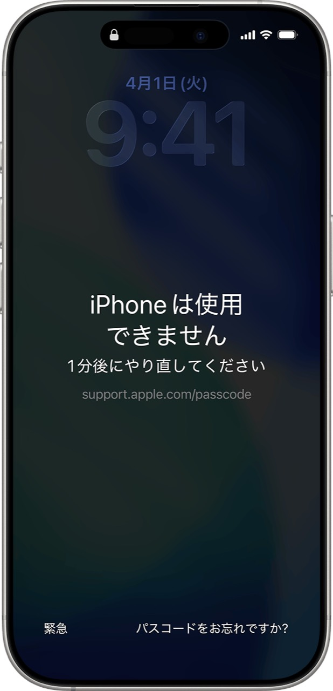

今回は、前日に水没して動かなくなったiPhone11の修理をお受けしました。
まず本体を開いて内部をクリーニングし、しっかり乾燥させてから組み立てました。
すると液晶パネルは真っ暗なままでしたが、どうやら本体の電源自体は入っているようです。
そこで液晶パネルを交換して確認したところ、画面に「iPhoneは使用できません 1時間後にやり直してください」と表示されました。

※掲載している参照画像は「1分後にやり直してください」と表示されているものです。
これは、水没したあともiPhoneの電源が入ったままで、画面は真っ暗でもタッチパネル自体は反応しており、パスコードが何度も誤入力されていたためと考えられます。
今回はすでにパスコードを9回間違えた状態でした。あと1回間違えてしまうと、状況によっては初期化が必要になる可能性もありました。
水没によるタッチパネルの故障で、勝手に画面が操作される「ゴーストタッチ」が起きていた可能性もあります。
とにかく今回は、大切なデータを初期化せずに済んで良かったです。
水没したiPhoneは、画面が映らなくても内部では電源が入っていたり、タッチ操作が反応していたりする場合があります。
水没した場合は、可能であれば電源を切り、なるべく早く修理店へお持ちいただくことをおすすめします。
修理内容
- 機種：iPhone11
- 修理内容：水没処置＋液晶パネル交換
- 所要時間：3時間以上
- 修理代金：3,300円＋8,500円＝11,800円（税込）